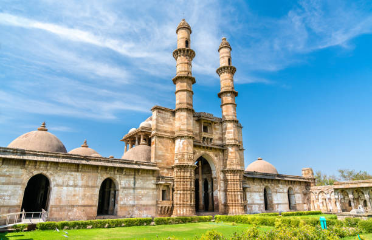
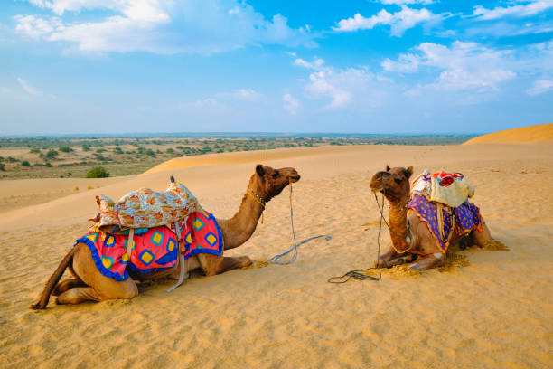
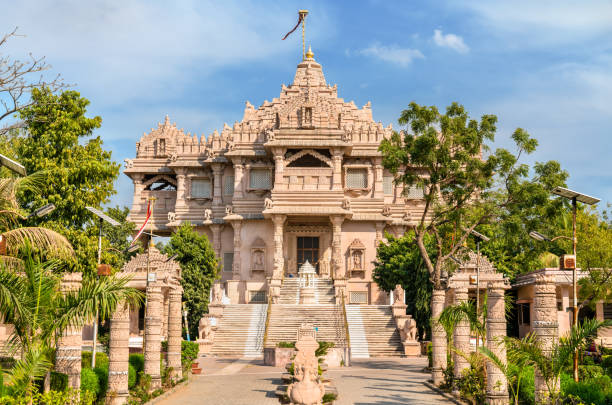
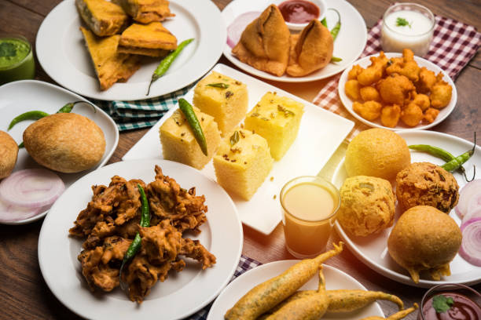

01
Ahmedabad
India's first UNESCO World Heritage City — famous for the peaceful Sabarmati Ashram, intricately carved Sidi Saiyyed Mosque, and historic pols.

Discover the land of white salt deserts, the only wild abode of Asiatic lions, historic stepwells, sacred sea-coast Jyotirlinga shrines, and vibrant nine-night Navratri Garba celebrations.
Explore Gujarat ↓Gujarat is a vibrant maritime state on India's western coastline, celebrated for ancient Harappan civilizations, rich textile legacies, wildlife sanctuaries, and Mahatma Gandhi's philosophy of non-violence.
From the bustling heritage quarters of Ahmedabad and the glistening white moonlit expanse of the Great Rann of Kutch to the lion-ruled forests of Gir and the timeless shore temple of Somnath, Gujarat weaves legend with unmatched hospitality.
World Heritage cities, salt deserts, lion sanctuaries, and holy coastal temples across Gujarat.

India's first UNESCO World Heritage City — famous for the peaceful Sabarmati Ashram, intricately carved Sidi Saiyyed Mosque, and historic pols.

A massive salt marsh converting into a surreal white desert under moonlight, celebrated for the annual Rann Utsav cultural carnival.
A sprawling dry deciduous wildlife haven in Saurashtra, celebrated worldwide as the sole surviving natural sanctuary of Asiatic lions.

An eternal shrine standing proudly on the shores of the Arabian Sea, revered across history as the first of the twelve sacred Jyotirlingas.
Gujarati cuisine is primarily vegetarian, renowned for its masterfully balanced blend of sweet, tangy, and spicy notes, enhanced by tempered mustard seeds and asafoetida.

UNESCO-recognized communal dance performed in synchronized concentric circles during Navratri in dazzling Chaniya Cholis.
A grand desert cultural festival showcasing Kutch folk music, tent cities, camel caravans, and local artisan markets.
Celebrated during Uttarayan in January, filling the skies of Ahmedabad and Surat with millions of colorful kites and lanterns.
Double-Ikat Patan Patola silk weaving, intricate Bandhani tie-dye, and mirror-embroidered tribal tapestries of Kutch.
Discover all 28 states, local food specialties, and centuries of living traditions.
← Back to All States